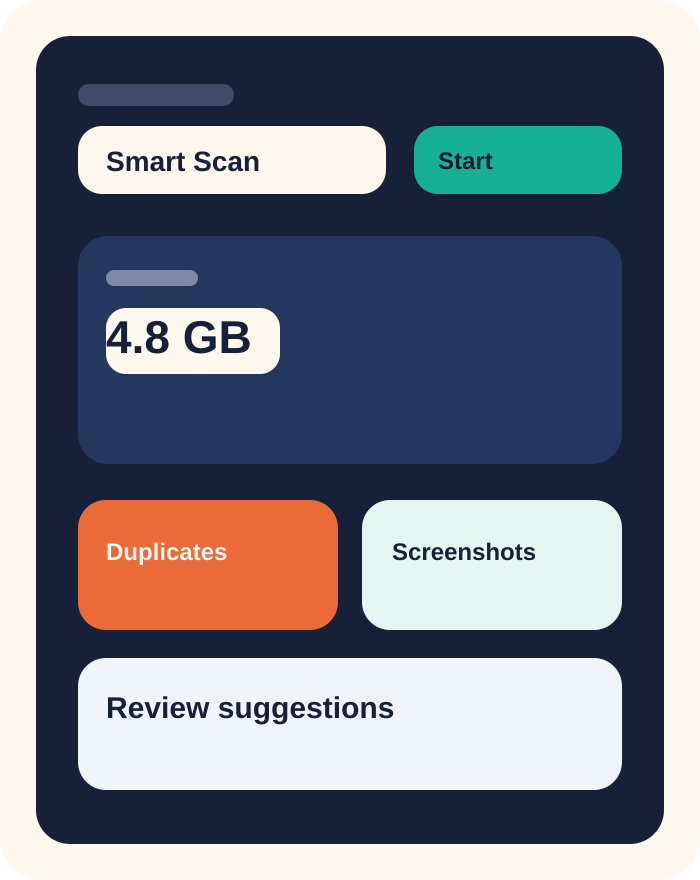
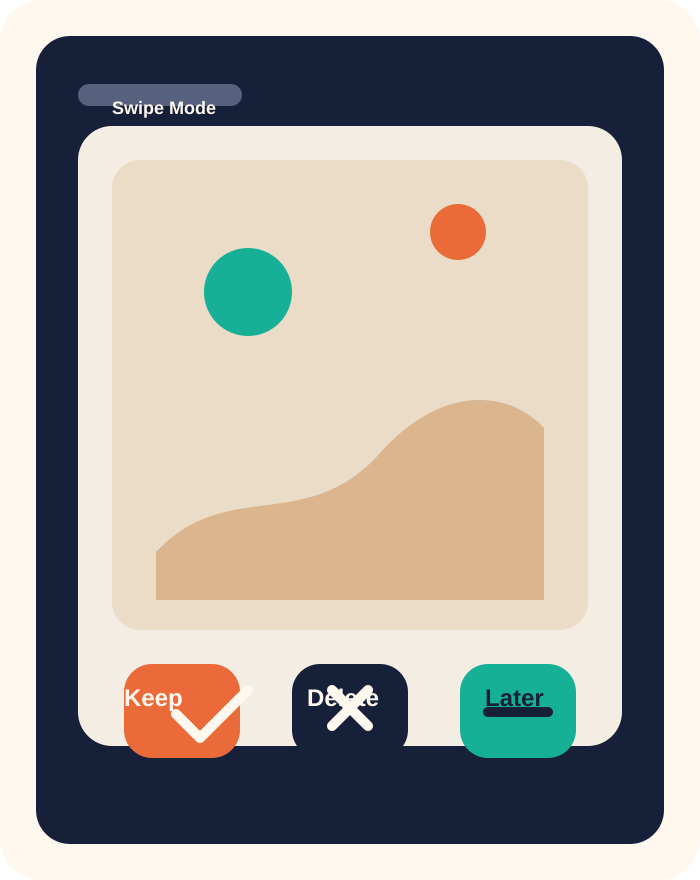
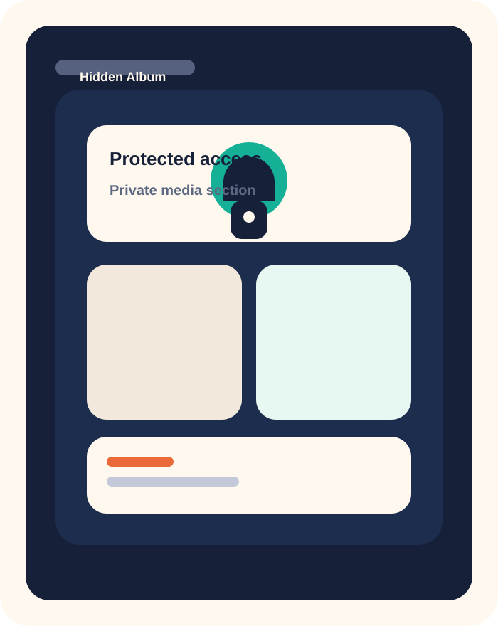

Storage cleanup, but with taste
Your camera roll called. It wants adult supervision.
CleanerOne helps you find duplicate photos, screenshots, large videos, and clutter-heavy albums before they quietly colonize your storage.
Fast triage
See what deserves deletion before your storage starts whining.
Hidden clutter wins
Screenshots, bursts, duplicates, and random chaos. The usual suspects.
Why it works
The cleanup app that does not look like it hates design.
CleanerOne is meant to turn storage cleanup from a guilty chore into a structured, fast decision flow.
Smart media sorting
Surface similar photos, screenshots, large videos, and obvious clutter categories without making the whole experience feel like spreadsheet duty.
Swipe cleanup flow
Review candidates quickly, keep what matters, and remove what clearly did not need to survive your lock screen era.
Private hidden album
Keep selected content tucked away behind a more deliberate, privacy-aware entry point instead of pretending the default Photos app setup is enough.
How it feels
Fast enough to use, clear enough to trust.
Scan your library
Let CleanerOne surface clusters, duplicates, screenshots, and heavy files that deserve attention.
Review without friction
Browse recommendations in a visual flow rather than tapping through a sad maze of folders and second-guessing every decision.
Keep the good stuff
Preserve the photos you care about, remove the clutter you do not, and move on with your day like a functional person.
Preview
Replace these placeholders with your real screenshots later.
The section is already wired for app visuals, captions, and a polished layout. Swap the SVG files or point these cards to exported App Store screenshots.



Privacy posture
People do not trust cleanup apps by default. Fair enough.
Your landing page should signal restraint. Explain what the app scans, what it does not do, and how users stay in control.
- Make permissions sound precise, not creepy.
- Link the privacy policy clearly instead of hiding it in the footer abyss.
- Explain hidden album features in normal human language.
FAQ
Short answers for predictable questions.
Does CleanerOne delete anything automatically?
No. The app should present candidates and let the user confirm what gets removed. You can adjust this wording once the final behavior is locked.
Can I use this page for App Store and TestFlight traffic?
Yes. Keep the primary CTA pointed at the App Store and the secondary CTA pointed at TestFlight while you are still iterating.
Can I move these files to another repo?
Yes. This folder is self-contained on purpose, so you can drop it into a GitHub Pages repo without carrying the entire app project with it.